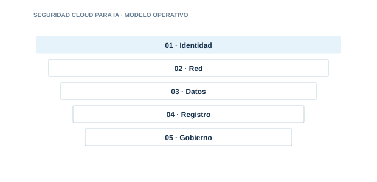

10 · PILAR
Seguridad Cloud para IA
Aplicar identidad, red privada, cifrado y monitorización en plataformas cloud de IA.

Directorio del pilar3 guías · acceso directo
01
IdentidadControl y evidencia aplicable
02
RedControl y evidencia aplicable
03
DatosControl y evidencia aplicable
04
RegistroControl y evidencia aplicable
05
GobiernoControl y evidencia aplicable
Cada guía incluye explicación, implantación, controles, evidencias, errores habituales, métricas y referencias.